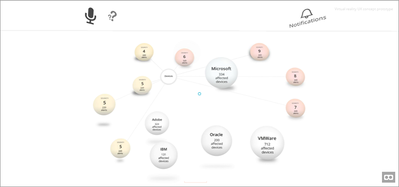
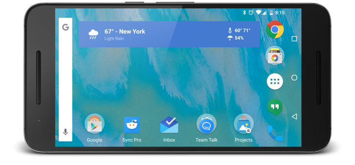
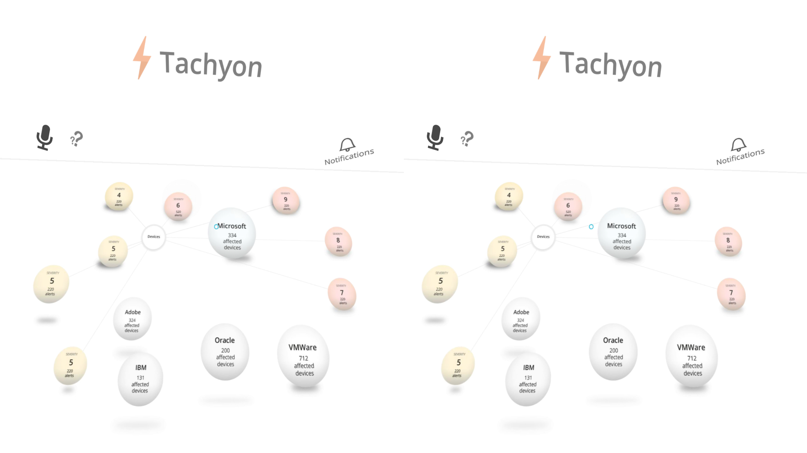
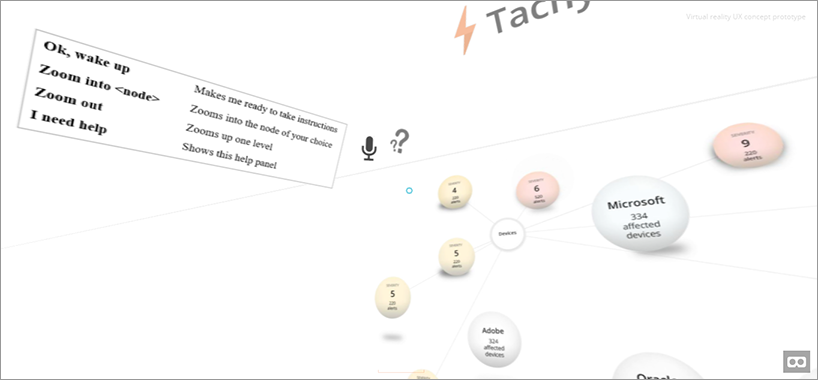
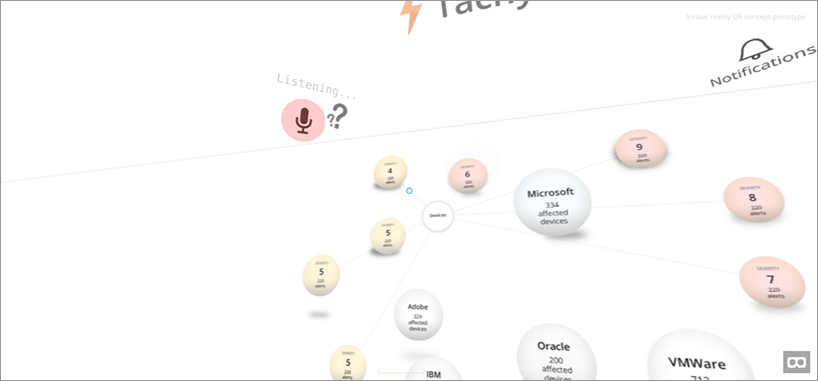
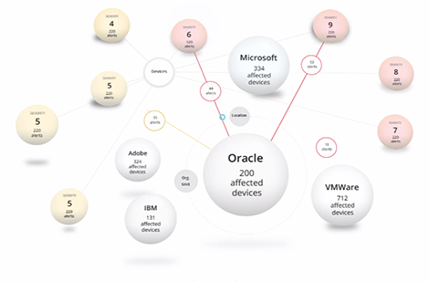
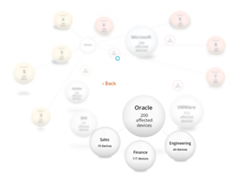

Voice-controlled VR UX concept prototype
This is a quick concept prototype that gives IT admins an overview of how secure their device estate is. It helps them immediately find devices currently affected by security vulnerabilities so the risk can be mitigated as soon as possible.
http://balazsmichnay.com/prototypes/vr-concept
On normal desktops the interface can be interacted with using the mouse. The centre of the viewport is indicated by the small blue circle in the middle of the screen.
Mobile devices that can be put into a VR headset can display the interface in a real 3D VR context:



Voice control
Conversation UI as an experience is becoming increasingly popular and familiar. This interface can be interacted with using voice commands. To see what command are available, use the mouse to point at the question mark (or look at it if you're using a VR headset):

You can use the wake up command "Ok wake up" to make the application listen for commands:

To illustrate how the user would drill down into Oracle to see what Oracle products are affected by reported security vulnerabilities, look at the Oracle node (or say: "Ok wake up ... Zoom into Oracle"):


The animation demonstrates the experience
At the end of the animation the zoomed-in node becomes more visible, while the rest of the nodes move further out from the viewport.